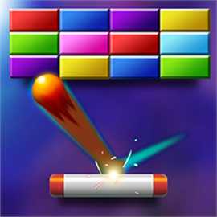

El famoso juego rompe ladrillos llega a nuestra plataforma de juegos, donde podrás disfrutar de numerosas horas de juego con el nivel que hemos diseñado para que te emociones jugando a uno de los más clasicos de todos. Si desea jugar a Brick Breaker pulse el boton de jugar debajo del mensaje.

El rey de los juegos retro, Snake ha vuelto! El clasicazo de al que todos hemos jugado vuelve con mecanicas y graficos totalmente diferentes a cualquier snake que hayas jugado anteriormente. Preparate para pasar un buen rato e intentar no comerte a ti mismo. Si desea jugar a Sneake pulse el boton de jugar debajo del mensaje.

Pong, el clasico juego al que todos hemos querido jugar con un amigo o familiar, ahora ha vuelto con más fuerza, donde podrás jugar contra nuestra IA la cual no te lo va a poner nada facil.Si llegas a los 3 puntos habrás vencido y estarás en lo alto de nuestro tablón de mejores jugadores .Si desea jugar a Pong pulse el boton de jugar debajo del mensaje.